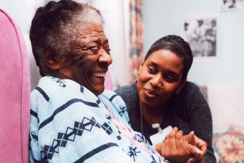
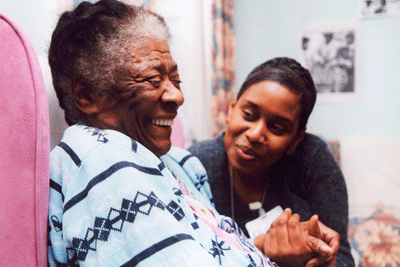

About Me
My name is Ojodu Sodiq and I work remotely as a Data Scientist with EssexCounty Council.
I hold a Bachelor and Masters' in Economics and Applied Econometrics. I have an extensive background
working with Natural Language Processing and varied datasets and using advanced statistical method and machine learning.
 

. . .One in eight adults are carers and every day another 6,000 people take on caring responsibilities.
Societies largely rely on the service of the unpaid informal carers and each individual saves the UK economy over
£19,000 per annum (£132 billion in total,) preventing thousands of people from needing social care services.
Project involves modelling skills to improve the job prospect with Essex County Council
The real challenge is not only to detect hate speech effectively, but to develop a solution which would make moderation of online debate containing hate speech easier for public communicators.
The goal of this hackathon is to have a functional prototype of the solution which will be ready or nearly ready for the testing phase.
Extracting key themes from testimonies of teenagers who are victims of sexual abuse, harassment and assaults

Helping engineers interviewing for software development positions by solving problems around data structures, algorithms, system design, and problem solving skills.